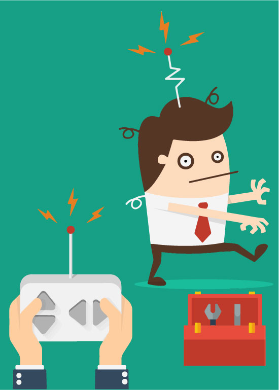
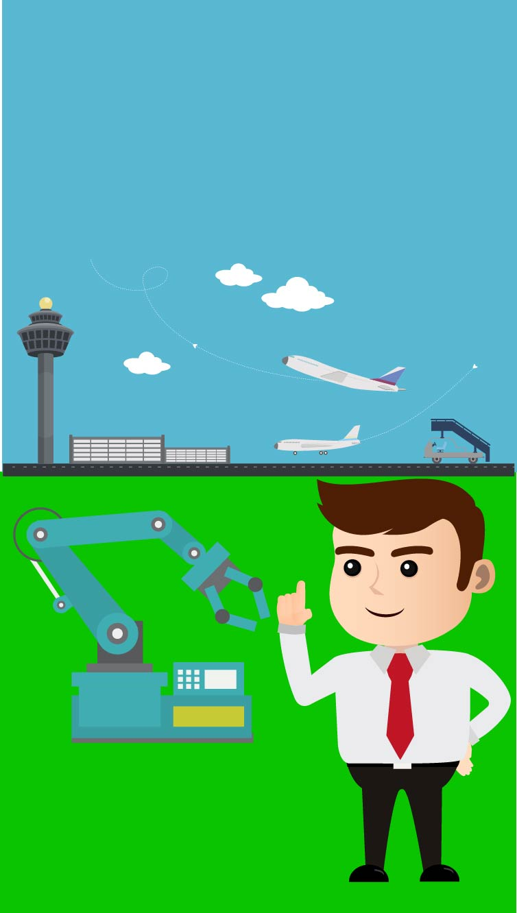

Robotmonteur:
Banen worden vervangen door robots, er zijn mensen nodig die deze robots maken of repareren als deze stuk zijn. Een robotmonteur is gespecialiseerd in het maken, programmeren, onderhouden en repareren van robots.

Onderhoudsmonteur internationale hub:
De baan onderhoudsmonteur houd in dat je de internationale hub draaiend houd en dat alle
servers het blijven doen.
Ontwikkelaar digitaal winkelcentrum:
Doordat er steeds meer online geshopt wordt en de winkels in de winkelcentra verdwijnen
wordt er een digitaal winkelcentrum gemaakt. Hier kan je gemakkelijk de sites vinden van de
winkels die normaal in de winkelcentra zitten. De ontwikkelaar zorgt ervoor dat gemaakt wordt
en draaiende gehouden wordt.
↑